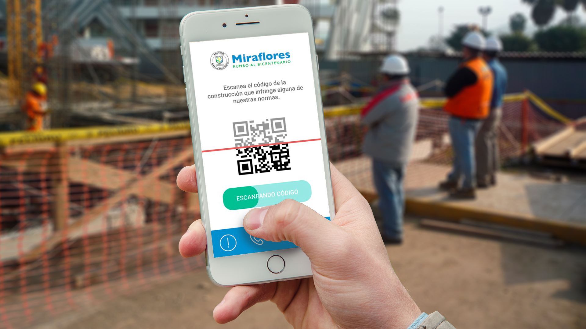

Contexto
La alta demanda de quejas y reclamos sobre construcciones de proyectos
inmobiliarios viene incrementando la carga de trabajo en el área de Fiscalización y Control Urbano de la Municipalidad
de Miraflores, esto se debe en gran parte al complicado proceso de atención que se lleva actualmente. Es por ello, que
el equipo ha decidido contar con el apoyo de UX Designers de Laboratoria para que los ayude a potenciar su servicio.
Problema
Tras realizar una ardua investigación y trabajo de campo entrevistando a vecinos y realizando
observación contextual del panorama que se tiene actualmente en Miraflores respecto a las construcciones, logramos identificar el
siguiente problema:
- Los vecinos perciben poco confiable y efectiva la capacidad resolutiva de la municipalidad de
Miraflores con respecto a los problemas generados por obras, por lo cual recurren a soluciones informales.
Además, no se encuentran educados acerca de sus derechos como ciudadanos, especialmente sobre el proceso
de quejas, generando actitudes de incertidumbre e indiferencia.
El reto
¿Cuál es la mayor problemática causada por la construcción de proyectos inmobiliarios
(licencias y edificaciones privadas) que enfrentan los vecinos de la Municipalidad de Miraflores?
Resultado
Durante estas dos semanas, nos enfocamos en descubrir las principales motivaciones y
frustraciones de los vecinos miraflorinos, esto nos permitió desarrollar varias alternativas de solución para potenciar el
servicio de fiscalización y control de obras urbanas. Los resultados fueron excelentes y pueden poner al municipio miraflorino
a la vanguardia en digitalización.
Consideramos estos 3 pilares como los más importantes: Educación, Empoderamiento y Flujos rápidos,
¿Por qué?
- Educación: Proponemos potenciar el boletín informativo con secciones en donde se promueva los deberes
y derechos del ciudadano, para así educarlo y hacer que este pueda conocer más acerca del proceso de generación de reclamos,
en este caso acerca del sector construcción.
- Empoderamiento: Con nuestras propuestas de mapa de calor y código QR, queremos otorgarle herramientas al ciudadano
para que este pueda hacer valer sus derechos y ser partícipe de la lucha en conjunto con la municipalidad, contra la informalidad,
planteando una estrategia que permitirá identificar las construcciones con más quejas/reclamos a fin de que el personal
encargado pueda priorizar la atención según estos criterios, y a su vez permita reducir el flujo de ingreso de reclamos actual para
la municipalidad.
- Flujos rápidos: Sugerimos adicionar una sección en el portal web de la municipalidad en la cual rediseñamos
el proceso de reclamos actual por una denuncia en 3 pasos con el fin de brindar practicidad para denunciar a una obra que infrinja alguna
norma y evitar los procesos largos y engorrosos, cambiando la percepción que tienen los vecinos miraflorinos de la municipalidad.

Lo que aprendí
Este proyecto nos permitió aprender una manera de repensar y resolver un desafío ya existente a través del diseño de
servicio. Con la guía de amable y Laboratoria, en tan sólo dos semanas logramos desarrollar varias alternativas de solución para potenciar el servicio
de fiscalización y control de obras urbanas de la Municipalidad de Miraflores. Además, a través de esta metodología de diseño, conocimos y pusimos en práctica
el método de Diseño Disruptivo y herramientas creativas de investigación como Safari, Roud Coffe, Shadowing, etc. Pero sin duda, lo más valioso y desafiante fue la experiencia obtenida trabajando
para el sector público y compartir nuestros resultados con el equipo junto al alcalde en dicha municipalidad.